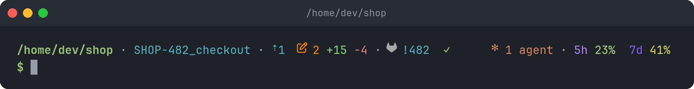

The prompt
zsh/prompt.zsh draws two lines: an info line with every fact, then the input line,
which holds only the $.

Rendered from the real prompt, 96 columns wide, for a demo project: the default theme and SHKIT_FORMAT='{dir} · {git} · {mr}'.
How it stays fast
Each prompt only computes local facts: the directory, git status, files on disk.
That stays under 50 ms even in a 35,000-file repository.
Anything that needs the network or a slow command is read from a cache under
$XDG_RUNTIME_DIR ($TMPDIR on macOS):
-
git fetch, for a true behind count; - the merge / pull request, its CI and its review, through
glab/gh; -
docker ps.
When a cache entry is older than its TTL, a background job refreshes it and a
muted ↻ shows. When the job finishes, the prompt redraws in place, without
pressing Enter. Every job has a timeout, and only one runs per cache entry.
Built-in blocks
| Block | Shows | Source |
|---|---|---|
{host} |
user@host, only over SSH or as root (root in FAIL) |
local |
{dir} |
the current directory, in full | local |
{git} |
branch (wt in a linked worktree), ahead ⇡ / behind ⇣, changed files with +added −removed lines, an operation in progress (rebase 2/5, merge, cherry-pick, revert, bisect) with its conflicts |
local, plus a background git fetch
|
{ticket} |
the ticket id in the branch name (feature/SHOP-42_cart → SHOP-42), a link to your tracker. Only once SHKIT_TICKET_URL is set |
local. Needs {git} before it |
{mr} |
the open or merged merge / pull request of the branch: !123 (GitLab) or #123 (GitHub), a link in terminals that support it, draft or merged, and the CI status (✓ passed, ✗ failed, ● running, ○ skipped) |
glab (GitLab) or gh (GitHub), cached. Needs {git} before it |
{review} |
the open MR / PR's approvals and unresolved threads |
glab and jq (GitLab) or gh (GitHub), cached like {mr}. Needs {git} before it |
{stack} |
one docker compose project, SHKIT_STACK: shop ✓ when all is up, shop 2 ✗ db,web when services are down or unhealthy, shop off. One-off runs and init containers that exited with 0 don't count |
docker ps, cached |
{docker} |
anomalies only: unhealthy, restarting or dead containers, or a failed container in a compose stack that is otherwise up |
docker ps, cached |
{duration} |
how long the last command ran, from SHKIT_DURATION_MIN seconds: 12s, 1m05s, 2h03m
|
local |
{status} |
the last command's exit status after a failure: ✗ 2, or the signal that ended it: ✗ INT
|
local |
{agents} |
live Claude Code sessions, and how many are busy |
~/.claude/sessions, local |
{quota} |
Claude usage for the 5 h and 7 d windows, colored low → high, with the reset time once past SHKIT_QUOTA_RESET_AT % |
a file written by the Claude Code status line, local |
A block with nothing to say shows nothing, and neither do the separators around it. So the default format holds nearly every block: most only show when there is something to say.
{ticket} and {stack} need a setting, usually per project:
shkit project
shkit set -p ticket_url 'https://tracker.example/t/{id}' # {id} = the ticket id
shkit set -p ticket_pattern 'SHOP-[0-9]+' # default: [A-Z]+-[0-9]+
shkit set -p stack shop # the compose project nameYou can write your own or get them from plugins.
shkit show lists every block available.
Format
Two settings lay the prompt out:
SHKIT_FORMAT='{host} · {dir} · {git} · {ticket} · {mr} {review} · {stack} · {docker} · {duration} · {status}' # the info line (default)
SHKIT_RIGHT_FORMAT='{agents} · {quota}' # right end of the info line (default)A format is {block} placeholders and literal text:
- Text between two blocks is a separator. It shows only when a block on each side shows something.
- Text before the first block or after the last one always shows.
-
Literal text is printed as is, in the
MUTEcolor.%has no special meaning. -
An unknown
{name}shows nothing.
shkit set format '[{git}] {dir}'
shkit set right_format '' # nothing on the rightThe right part is aligned to the terminal's right edge and follows its width when you resize the window. If both parts can't fit on one line, the right part is left out.
SHKIT_SEPARATOR (default ' · ') separates the parts inside a block, for
example the branch, its status and a rebase in {git}.
The input line is SHKIT_ICON_PROMPT (default $) in the PRIMARY color, and
in bold FAIL after a failed command.
Colors
Blocks never use color codes directly. They use roles, and each role is an
SGR code:
'1;32' (bold green), '38;5;33' (256-color), '38;2;255;128;0' (true color).
| Role | Default | Used for |
|---|---|---|
SHKIT_COLOR_PRIMARY |
1;32 |
the directory, the $
|
SHKIT_COLOR_ACCENT |
36 |
branch, ahead, ticket, duration, busy agents |
SHKIT_COLOR_MUTE |
38;5;248 |
separators, literal text, secondary info |
SHKIT_COLOR_WARN |
38;5;208 |
behind, changed files, an operation in progress, docker, unresolved threads, user@host over SSH |
SHKIT_COLOR_ADDED |
38;5;114 |
added lines |
SHKIT_COLOR_REMOVED |
38;5;174 |
removed lines |
SHKIT_COLOR_OK |
32 |
CI passed, approvals, a stack all up |
SHKIT_COLOR_FAIL |
31 |
CI failed, conflicts, the $ and {status} after an error, root |
SHKIT_COLOR_RUN |
34 |
CI running |
SHKIT_COLOR_AGENT |
38;5;173 |
Claude sessions |
SHKIT_COLOR_QUOTA_5H / _7D
|
38;5;141 / 38;5;99
|
quota labels |
SHKIT_QUOTA_PALETTE |
15 × 256-color codes | quota percentage, low → high (an array) |
shkit set color_accent '38;5;33'
shkit set quota_palette 108 150 185 227 221 215 209 167A block may add its own role, for example SHKIT_COLOR_PHP.
Icons
Every icon is a variable. Set one to '' to drop it.
| Icon | Default | Icon | Default | |
|---|---|---|---|---|
SHKIT_ICON_DIR |
none (for example $'\uf07b', a folder) |
SHKIT_ICON_DIRTY |
Nerd Font pencil | |
SHKIT_ICON_BRANCH |
none (for example $'\ue0a0', a branch) |
SHKIT_ICON_ADDED / _REMOVED
|
+ / −
|
|
SHKIT_ICON_GITLAB / _GITHUB
|
Nerd Font logos | SHKIT_ICON_CONFLICT |
✗ |
|
SHKIT_ICON_DOCKER |
Nerd Font whale |
SHKIT_ICON_CI_OK / _FAIL
|
✓ / ✗
|
|
SHKIT_ICON_AGENT |
✻ |
SHKIT_ICON_CI_RUN / _SKIP
|
● / ○
|
|
SHKIT_ICON_AHEAD / _BEHIND
|
⇡ / ⇣
|
SHKIT_ICON_REFRESH |
↻ |
|
SHKIT_ICON_PROMPT |
$ |
SHKIT_SPINNER |
braille frames (an array) | |
SHKIT_ICON_TICKET |
Nerd Font task list |
SHKIT_ICON_APPROVED / _THREADS
|
Nerd Font thumbs up / comments | |
SHKIT_ICON_DURATION |
Nerd Font clock | SHKIT_ICON_STATUS |
✗ |
|
SHKIT_ICON_HOST |
none |
shkit set icon_branch $'\ue0a0' # a branch glyph before the branch name
shkit set icon_agent '🤖'The Nerd Font glyphs need a Nerd Font, or Symbols Nerd Font as a fallback font in your terminal.
Behaviour
These are best set in settings.sh, or with shkit set:
| Setting | Default | Effect |
|---|---|---|
SHKIT_SHOW_MR |
true |
query glab / gh for {mr}
|
SHKIT_AUTO_FETCH |
true |
background git fetch for an up-to-date behind count |
SHKIT_TITLE_SPINNER |
true |
animate the tab title while a refresh runs |
SHKIT_FETCH_TTL |
300 |
seconds between two fetches of a repository |
SHKIT_MR_TTL |
120 |
seconds between two MR / PR lookups (20 s while CI runs) |
SHKIT_DOCKER_TTL |
30 |
seconds between two docker ps
|
SHKIT_DIFF_MAX_FILES |
50 |
above this many changed files, skip the +/− line count |
SHKIT_QUOTA_RESET_AT |
80 |
from this %, {quota} also shows when the window resets |
SHKIT_QUOTA_FILE |
~/.cache/claude-quota |
where {quota} reads from |
SHKIT_TICKET_URL |
none |
{ticket}'s link, {id} = the ticket id. No URL, no block |
SHKIT_TICKET_PATTERN |
[A-Z]+-[0-9]+ |
the ticket id in the branch name (a regex) |
SHKIT_STACK |
none |
{stack}'s compose project |
SHKIT_DURATION_MIN |
3 |
seconds from which {duration} shows |
SHKIT_NOTIFY |
true |
notify when a long command ends |
SHKIT_NOTIFY_AFTER |
30 |
seconds from which a finished command is notified |
SHKIT_NOTIFY_TIMEOUT |
none | milliseconds the notification stays on screen (notify-send -t; none: the notification server's own) |
SHKIT_NOTIFY_IGNORE |
editors, pagers, ssh, top… |
commands never notified (an array) |
A fetch never runs during a rebase or other operation in progress, never asks for credentials, and gives up after 60 s.
Notifications
When a command ran for SHKIT_NOTIFY_AFTER seconds or more (30 by default), a
desktop notification from shellkit says so as it ends: ✓ make done or
✗ make failed · exit 2, with a green check or a red error icon, then how long it
took and the full path. It comes from notify-send on Linux, or osascript on macOS
(which shows it under Script Editor, with no icon). Over SSH, on Linux without a
display, or when neither exists, the terminal bell rings instead, so the tab gets flagged.
- Only the command's name is sent, never the line: a notification history would otherwise keep a token typed in it.
-
Interactive programs are skipped: a line where any command is listed in
SHKIT_NOTIFY_IGNORE(editors, pagers,ssh,top, database shells,fg…) is not notified. Aliases are expanded, andsudoand its options,env,nice,VAR=…,(and{are looked through:sudo -E vimandmake && vimare skipped. The name shown is the line's first command, past acd. - Nor what you stopped: a command ended with Ctrl+C or suspended with Ctrl+Z.
- It fires even when you are watching: no terminal reports portably whether its tab is visible.
shkit set notify_after 120 # longer commands only
shkit set notify_timeout 5000 # on screen for 5 s
shkit set notify_ignore vim less man ssh docker # the full list (an array, or one string)
shkit set notify false # offOr in settings.sh, or for one shell: export SHKIT_NOTIFY=false, before zsh starts.
SHKIT_NOTIFY_TIMEOUT only applies to notify-send, and GNOME Shell keeps its own
delay for normal notifications. macOS sets its own delay too.
Tab title
The terminal tab shows the full current path, even in $HOME. While a refresh
runs, SHKIT_SPINNER frames animate in front of it. Turn that off with
SHKIT_TITLE_SPINNER=false.
Security
PROMPT_SUBST stays off, and every dynamic text (branch names, file contents,
API answers) is escaped before it reaches the prompt. A branch named
$(rm -rf ~) or %F{red} is printed as is, never run or interpreted.